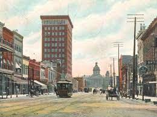
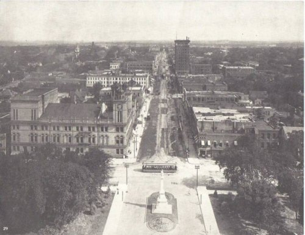
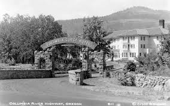

Learn about historic sites that are in plain view around Columbia.
Date:
First Baptist Church
When people think of the south the first thing that comes to mind is church. They are
correct! Religion has been a driving force in South Carolina since Europeans migrated
to the Americas. In Columbia, one church serves as a historic place for the capital as
it wasn't just a place for worship. Although, South Carolina was one of the original
colonies, not every piece of land was heavily inhabited. Columbia proved that to be true.
The establishment of Columbia was a political move between the farming upstate and the
farming coastal citizens.

SC State House by Historic Columbia
First Baptist Church didn't start with a building but a group of people worshipping together
in 1809. The church would not be built for another 50 years and later served as the location
for Secession Convention for southern states. Although First Baptist Church was the largest
building in Columbia, it was miraculously spared from the destruction of US Gen. William T. Sherman.
There are many rumors or legends to how such a building did not burn as Union soldiers burned
many buildings as they made their way through the south.
Regardless of the whys for First Baptist Church being untouched, one cannot forget the historic
structure. The church is currently on registered as a historic landmark with unique features.
With a Roman Tuscan portico and pilasters down its sides, First Baptist Church shows the architecture
style of the 1800s in southern states. To learn more about the church click here.
Woodrow Wilson Family House

SC State House by Historic Columbia
The story of the Reconstruction Era is told by many through various lens. The era
is filled with important events after the ending of slavery. It chronicles a history of where people
of Africans descent were forced to use their labor for no compensation. This cycle
of forced labor was passed from one generation to another, and the ideals of America as
a place of independence wasn't extended to everyone. Once there were laws passed to
ensure chattel slavery ended, a new era called Reconstruction took hold as ending
chattel slavery was done through war. This war took a toll on the south politically,
economically, and socially. As people from different walks of life were adjusting to
the new world they found themselves in, they found they had different roles as well.
There were no plantation owner who enslaved people, slave catchers who captured people seeking
freedom, nor were there people forced to work generation after generation without
legal, political, and social status under the term "slave."
As the south was adjusting to changes and the challenges associated with the Reconstruction
era, there was a family with a Columbia, SC connection whose son would later become
the 28th president of the United States. This family, the Wilson Family, built a house in
Columbia. The importance of the home is that it's South Carolina's only remaining presidential site.
Today, the home serves as an information station on events happening during this era as museum.
While the US was navigating the social, economic, and political Reconstruction era, Columbia's residents,
both Black and White were working through a vastly changed society.
Columbia, as the capital in South Carolina, played a significant role during Reconstruction. There were
both Black and White students attending the University of South Carolina. The university even hired
it's first Black professor who happened to be the first Black graduate of Harvard University,
Richard Theodore Greener. The political landscape was exception to change as Black people as a whole began to
become politically empowered for the first time since after slavery. Although, things were happening that seemed
positive there were also an underlining rise in hate groups with sought to undermine freedom of freedmen and
women. he Wilson family's home stands as a historical landmark, symbolizing the complex legacy of Reconstruction
in South Carolina.
If you want to explore more and visit the Woodrow Wilson house and the importance it shares with information
preservation, please click here.
Elmwood Cemetery
When people think of cemeteries, the first thought is not to think of it as a historic site.
Since cemeteries server as the last place of rest for many people, people forget that
grave sites are historic markers of those that came before. There is no discrimination
between age, year of death, nor gender. But people have discriminated against race making
cemeteries an interesting place to learn the thoughts and ideas of those from the past.

SC State House by Historic Columbia
Elmwood Cemetery is no different nor immune from societal ills. Although there should be no
distinction between people even in death, society has influence how we bury and view the dead.
Elmwood Cemetery was created in 1851 currently on 168.46 acres of land. There are various styles
of graves at the site, but some consider the Confederate soldiers buried in the cemetery to be the
most interesting graves there. There are 174 Confederate graves and several unmarked Confederate
graves.
The style and location of graves are reflected in the time people were buried and where they
were from in the state. The cemetery is sectioned off reflecting the social and economic
standing of those buried there. One should not be surprised to find flush stones, tablets,
headstones, mausoleums, ledgers, and obelisks. Those that are buried there family members
wanted to remember their loved ones and those in the future to remember as well. Some prominent
figures in the state history are buried there as well as the citizens of South Carolina.
If you want to explore and learn more please click here.